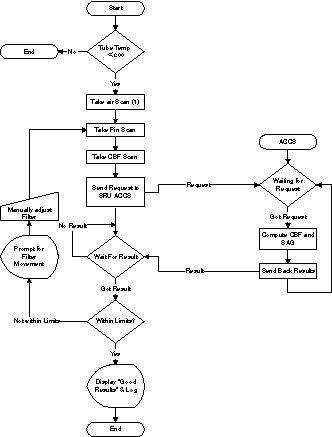
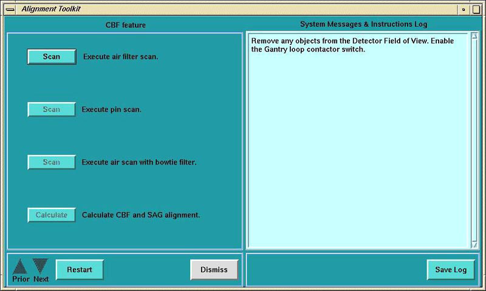
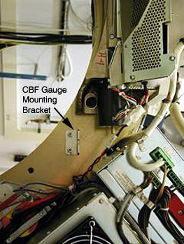
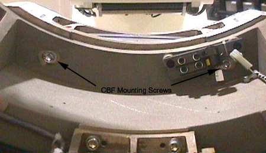
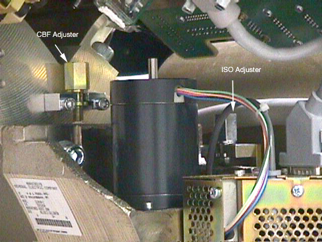

Proprietary to General Electric
Direction 5224328-800, Rev# 5
Dir 5224328-800 LightSpeed 5.X HP60 Limited Access Service
Methods - Adv.
Proprietary to General Electric |
| Required Persons | Preliminary Reqs | Procedure | Finalization |
|---|---|---|---|
| 1 |
CBF/SAG Alignment ensures the focal spot is accurate, the bowtie filter is centered and center of rotation is in a straight line.
Illustration 1: CBF Procedural Flow

| NOTE: | For a larger version of the above illustration, click on the pdf icon below: |
Media File 1: CBF Procedural Flow

| NOTE: | When performing alignments, wait at least 15-30 minutes between scans to prevent unnecessary adjustments. |
Select [SERVICE DESKTOP] .
Select [REPLACEMENT] .
Select [TUBE CHANGE] .
Select [CBF AND SAG ALIGNMENT] .
Illustration 2: CBF/SAG Alignment Program Screen

Click on the <SCAN> button to execute air filter scan.
Place the 1/8 inch screw driver on the phantom holder (should be pointing into the Z direction).
Execute pin scan.
Execute air scan with bow-tie filter.
Click on the <CALCULATE> button to calculate the CBF and SAG alignment.
Mount indicator onto the lower dial mounting bracket ( Illustration 3). Make sure that you zero the Dial Indicator.
Rotate the Gantry to place the tube at the 3 o’clock position.
Illustration 3: CBF Dial Indicator

Loosen the six (6) M14 collimator cap screws. Four (4) cap screws are on the front side of the collimator. (One cap screw is behind the cable connections. Use a swivel adapter for ratchet wrench.) Two (2) cap are screws on the rear (through the rotating base casting). See Illustration 4.
| NOTE: | Be careful not to move the laser light. If you do, you will need to re-align the lights. |
Illustration 4: Collimator CBF Rear Mounting Screws

Adjust the Collimator as indicated by the results of the calculation. (Ignore the negative sign in front of the adjustments.)
Tighten the Collimator.
Re-scan and calculate.
Proceed to the next step if the adjustment is within limit, otherwise jump to step 8.
Torque all six (6) M14 cap screws to standard torque value.
Illustration 5: CBF Adjuster Location

No finalization required.